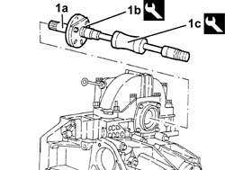
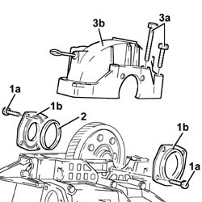
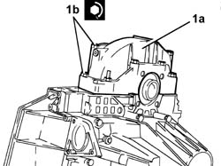
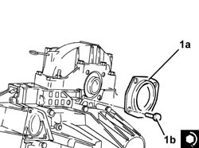
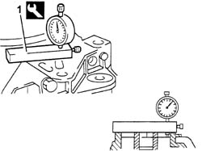
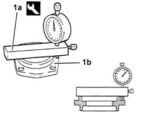
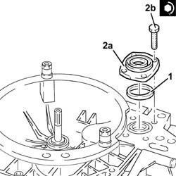

2110D14 DIFFERENTIAL INNER CASE SUPPORT - R + R WITH MANUAL GEARBOX
- Path
- Procedures > 21 GEARBOX UNIT > 2110 MANUAL GEARBOX WITH DIFFERENTIAL > 2110D MANUAL GEARBOX DIFFERENTIAL > 2110D14 DIFFERENTIAL INNER CASE SUPPORT - R + R WITH MANUAL GEARBOX
- Kind
- repair procedure (removal / refitting; the operation number is the code)
- Applies to
- engines: 2.0 JTS; all production periods
- Interactive page
- https://sloeber94.github.io/elrnDB-aGt/en/#/125001255
Applies to: engines: 2.0 JTS; all production periods
 Removing
Removing
 Refitting
Refitting1. Remove the left internal differential driveshaft (1a) using tools (1b) and (1c).
 | Name | Country |
|---|---|---|
1b | Flange | 1.820.229.000 |
| Name | Country |
|---|---|---|
1c | Counter weight | 1.821.161.000 |

Applies to: engines: 2.0 JTS; all production periods
1. Undo the bolts (1a) and remove the flanges on the differential (1b), complete with seals.
2. Remove the adjustment shim.
3. Remove the bolts (3a) and remove the support for the differential internal housing (3b).

Applies to: engines: 2.0 JTS; all production periods
Refitting
RemovingApply sealant to the entire matching surface of the differential internal housing support.
 | Type | Component | Name | Qty. |
|---|---|---|---|---|
- | Sealant | Differential internal housing support | Loctite 510 | - |
1. Fit the differential internal housing support (1a) and fix it tightening the bolts (1b) to the recommended torque.
 | Fastening | Component | Ø | Value (daNm) |
|---|---|---|---|---|
1b | Bolt | Differential internal housing support | M10 | 4.3 - 5.3 |
| Fastening | Component | Ø | Value (daNm) |
|---|---|---|---|---|
1b | Bolt | Differential internal housing support | M8 | 2.1 - 2.6 |

Applies to: engines: 2.0 JTS; all production periods
1. Fit the flange on the differential, gearbox side (1a), complete with new seal and seure by tightening the bolts (1b) to the recommended torque.
| Fastening | Component | Ø | Value (daNm) |
|---|---|---|---|---|
1b | Bolt | Flanges on differential | M8 | 2.1 ÷ 2.6 |

Applies to: engines: 2.0 JTS; all production periods
Using a suitable drift, tighten the engine side bearing inner/outer race.
1. Position the tool, complete with dial gauge, on the surface of the differential, engine side, and zero the dial gauge with a pre-loading of 1 mm.
| Name | Country |
|---|---|---|
1 | Dial gauge mounting | 1.820.085.000 |

Applies to: engines: 2.0 JTS; all production periods
1. Position the tool (1a), complete with dial gauge, on the differential flange, engine side (1b) and measure the difference.
| Name | Country |
|---|---|---|
1a | Dial gauge mounting | 1.820.085.000 |

Applies to: engines: 2.0 JTS; all production periods
Calculate the size of the adjustment ring for pre-loading the differential bearings adding 0.12 mm to the difference measured.
1. Place in the housing the adjustment shim or shims for pre-loading the differential bearings, of the size calculated or the next size up.
2. Fit the flange on the differential, engine side (2a), complete with a new seal and secure by tightening the bolts (2b) to the recommended torque.
| Fastening | Component | Ø | Value (daNm) |
|---|---|---|---|---|
2b | Bolt | Flanges on differential | M8 | 2.1 ÷ 2.6 |

Applies to: engines: 2.0 JTS; all production periods
Fit the left inner driveshaft.